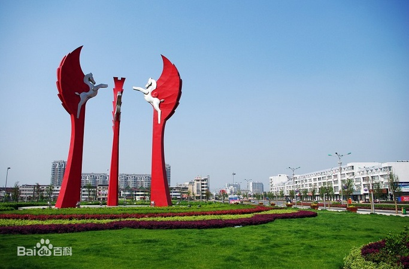

靖江市，简称靖，江苏省辖县级市，由泰州市代管，位于泰州市东南部，介于北纬31°56′－32°08′，东经120°01′－120°33′之间，属亚热带季风气候，是江苏省新兴的港口工业城市，总面积665平方公里。截至2020年11月1日零时，靖江市常住人口为663408人。明成化七年（1471年），始置靖江县，属常州府。1996年7月19日，地级泰州市设立，靖江市改由泰州市代管。截至2019年，靖江市辖1个街道、8个镇；另辖5个乡级单位。
2020年全市实现地区生产总值1004.8亿元，同比增长3.0%。按常住人口计算全年人均GDP为146772元。分产业看，第一产业实现增加值27.15亿元，增长3.0%；第二产业实现增加值537.77亿元，增长2.4%；第三产业实现增加值439.88亿元，增长3.7%，三次产业占比为2.7:53.5：43.8，第三产业增加值占GDP比重比上年提高1.6个百分点。2020年12月，社科院发布《全国县域经济综合竞争力100强》，靖江排名第30。
个人对前端的看法：
为什么选择前端？
这个行业很难饱和，找到工作的机会很大，工资待遇由个人能力决定
前端的注意事项？
学，不学习最新的技术便会被淘汰，大批的从业者意味着大批的替代者
前端对能力的要求？
学完HTTP、CSS、JavaScript以及熟悉部分框架
前端工作要注意什么？
高效、代码的简洁易懂、持续不断学习新技术
我的GitHub地址
两周前开始重新学习前端，感觉知识永远是自学来的实在，接下来开始与JavaScript接轨，然后去学习Vue框架
就这么多罢